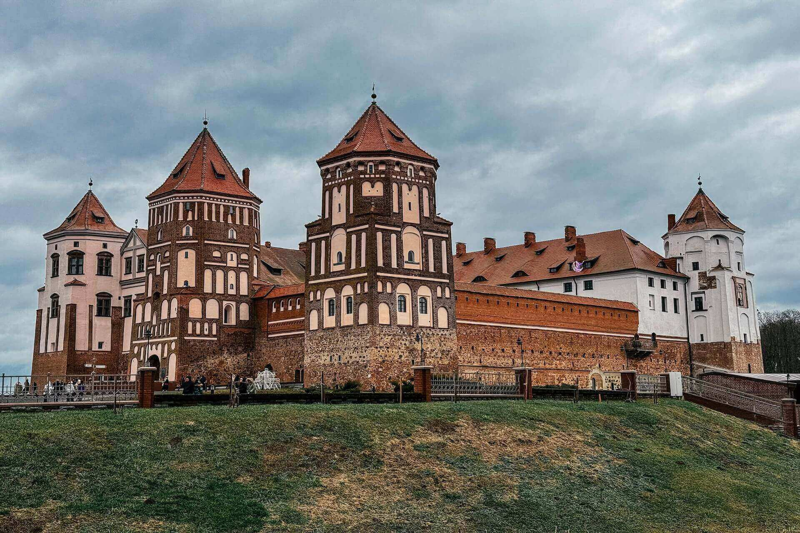
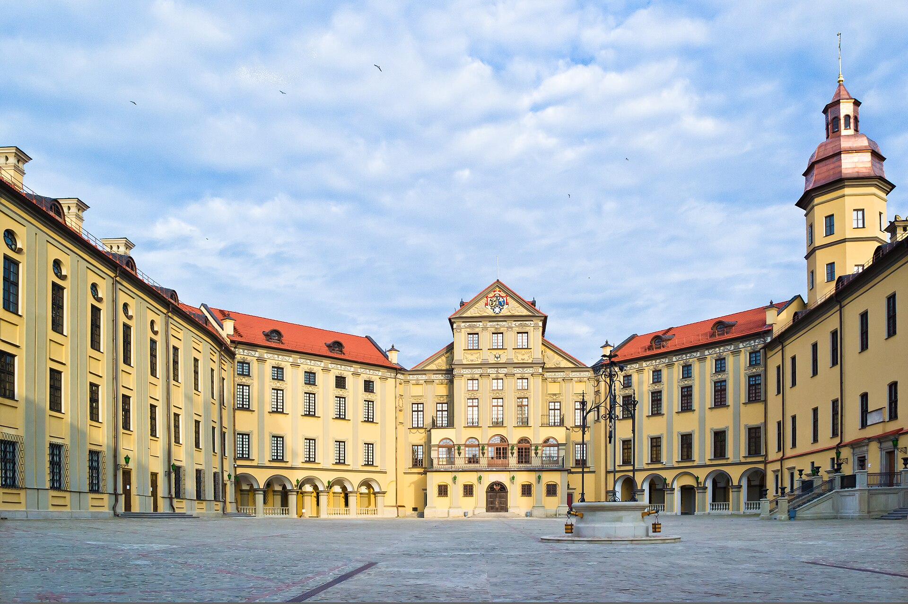
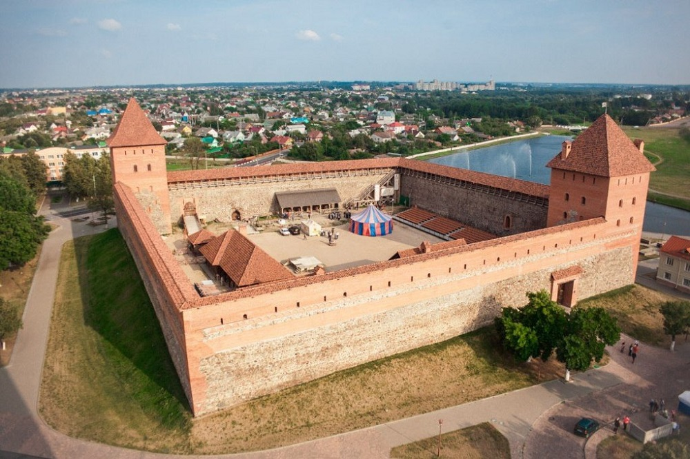

Добро пожаловать в удивительное путешествие по культурному наследию Республики Беларусь! Наш край — это место, где переплетаются эпохи, оживают древние легенды и хранится память о великих событиях. Здесь суровая готика и барокко суровых средневековых замков хранят тайны княжеских династий, а современные музеи и театры открывают двери в мир высокого искусства, эстетики и вдохновения. Памятники и мемориалы Беларуси рассказывают о многогранности её истории: от гордости за просветителей и родной язык до глубокой памяти о героизме и подвиге народа. Здесь каждый найдет что-то свое — будь то атмосфера рыцарских времен, вдохновение для учебы и творчества или важный урок истории. Отправляйтесь в виртуальный тур по главным достопримечательностям страны, откройте для себя их уникальную красоту и прикоснитесь к живому наследию Беларуси!
Замки на территории Беларуси





Памятники на территории Беларуси
Центры культуры на территории Беларуси